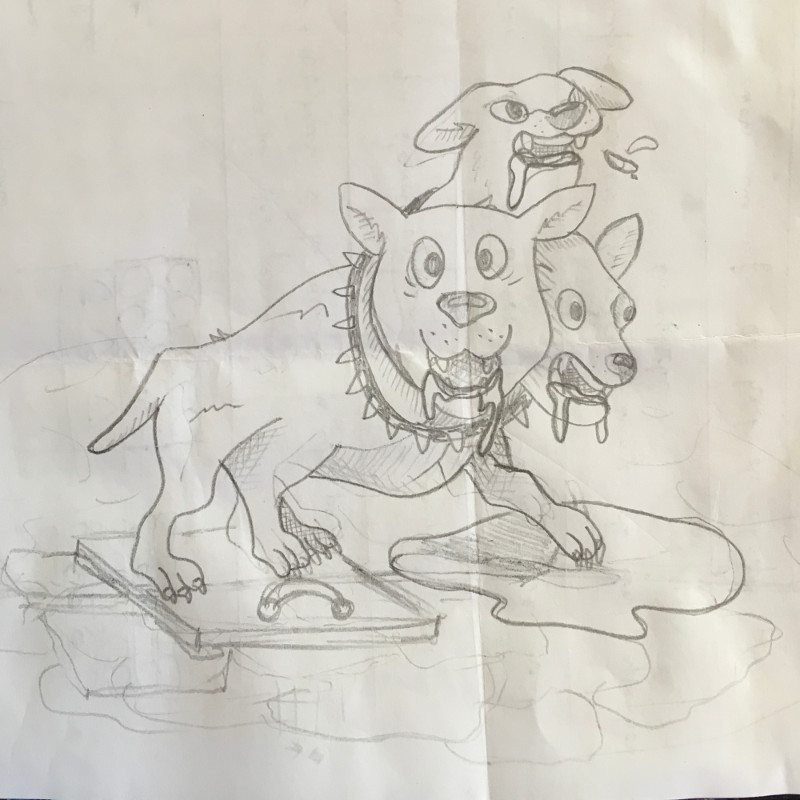
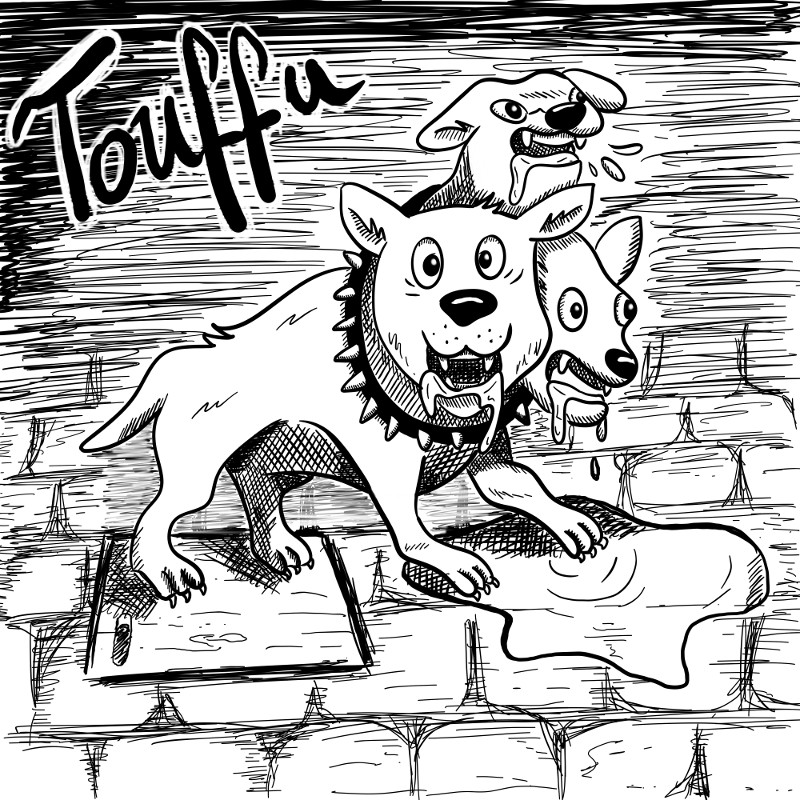

Inktober 2018 - J.6 : Bavant
Publié le 06/10/2018 dans Dessin.
En anglais, le thème est drooling, ce qui signifie littéralement en bavant ou en salivant. Je voulais donc représenter l’action même.
C’est ainsi que j’ai pensé à Touffu, le chien à trois têtes de Hagrid. De cette manière, je réponds à ma nouvelle contrainte (qui n’en est pas vraiment une), à savoir dessiner des choses en rapport avec l’univers de Harry Potter.
J’ai d’abord dessiné un brouillon que j’ai pris en photo pour pouvoir le récupérer dans ma tablette. De là, j’ai utilisé un logiciel de dessin pour reproduire le chien avec une plume numérique. Je constate que j’ai encore du travail pour que le tracé paraisse moins lisse, moins linéaire et moins propre. J’aime quand-même bien ce bon chien-chien.

